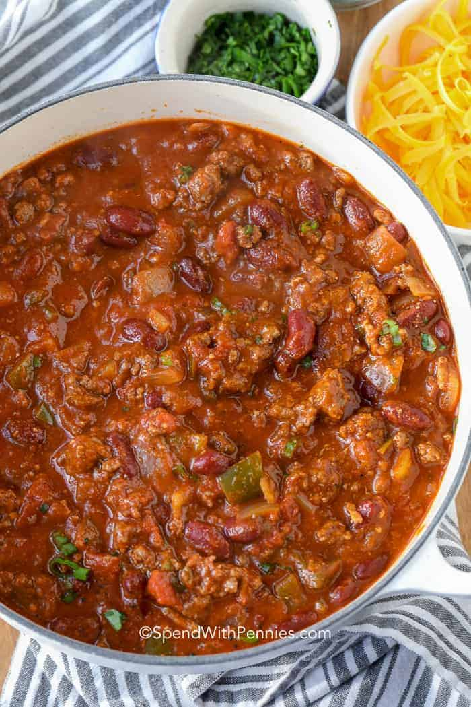

Chilli

Best chilli recipe
The Best Chili Recipe is one that is loaded with beef and beans and absolutely full of flavor… just like this one! Chili is hands down one of my husband’s favorite meals (and I love it because it’s easy to make)!
Ingredients
- 2 poundslean ground beef or ground chicken
- 1 diced onion
- 1 jalpeno
- 4 cloves of garlic
- 2 1/2 tablespoons chilli powder
- 1 teaspoon cumin
- 1 green bell pepper, seeded and diced
- 14 1.2 ounces crushed tomatoes, canned
- 19 ounces kidney beans canned drained and rinsed
- 14 1/2 ounces diced tomatoes with juice
- 1 1.2 cups of chicken or beef broth
- 1 cup of beer
- 1 tablespoon tomato sauce
- 1 tablespon brown sugar
- salt and pepper to taste
Steps
- Combine ground beef and 1 ½ tablespoons chili powder
- In a large pot, brown ground beef, onion, jalapeno, and garlic. Drain any fat.
- Add in remaining ingredients and bring to a boil. Reduce heat and simmer uncovered 45-60 minutes or until chili has reached desired thickness.
- Top with cheddar cheese, green onions, cilantro or other favorite toppings.